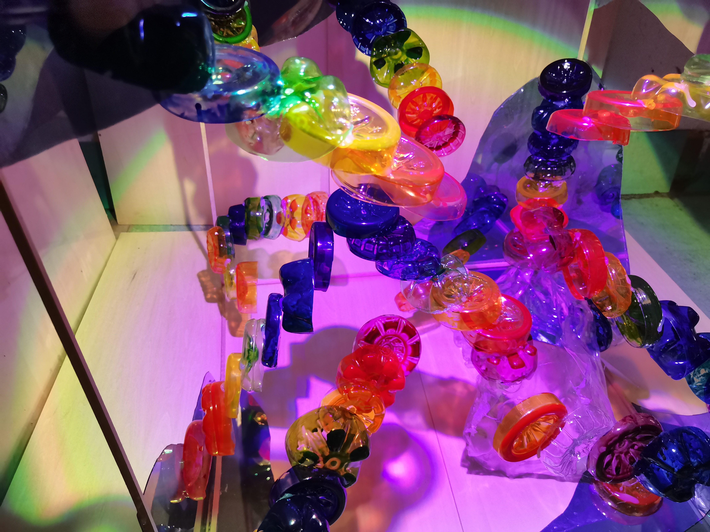

Project Summary
DATA BECOMES
MATTER
MATTER
Melting Pulse translates real-world glacier melt data into a sensory installation. Using Python for data acquisition and cleaning, the project maps decades of climate records onto physical outputs — light, sound, and material change — creating an emotional confrontation with environmental data that charts and numbers alone cannot achieve.
01 — Technical Process
DATA PIPELINE
01 / COLLECT
RAW DATA
Climate datasets — glacier area measurements, temperature records, sea level indices spanning 1980–2024.
02 / CLEAN
PYTHON
Pandas scripts to normalize, interpolate missing values, and standardize time series across multiple sources.
03 / VISUALIZE
MAP + RENDER
Data mapped to physical parameters: temperature rise → light intensity, melt rate → drip speed, volume loss → material decay.
04 / OUTPUT
INSTALLATION
Arduino-driven physical elements respond in real time, turning data into a lived, sensory experience for the audience.
02 — Source Material

GLACIER DOCUMENTATION
Primary visual reference and emotional anchor for the installation. The documentation of glacier surfaces — their texture, scale, and erosion — directly informed the material and color language of the work.
03 — Design Process
MATERIAL STUDIES

04 — Approach
HOW IT WORKS
Research
Sourced NSIDC glacier area datasets and NOAA temperature anomaly records. Identified patterns showing accelerating melt rates correlated to temperature rise post-1990.
Data Work
Wrote Python scripts using Pandas and NumPy to clean, align, and normalize the datasets. Built a mapping layer translating numerical values into physical parameter ranges (brightness, drip interval, saturation).
Fabrication
Arduino microcontrollers drive LED arrays and a controlled drip mechanism. Physical materials — ice-like resins and organic fabrics — change state over the duration of the exhibition.
Experience
Visitors observe the installation's state changing in real time, sonified by low-frequency audio. The experience is designed to trigger a felt sense of loss and urgency — not just intellectual understanding.